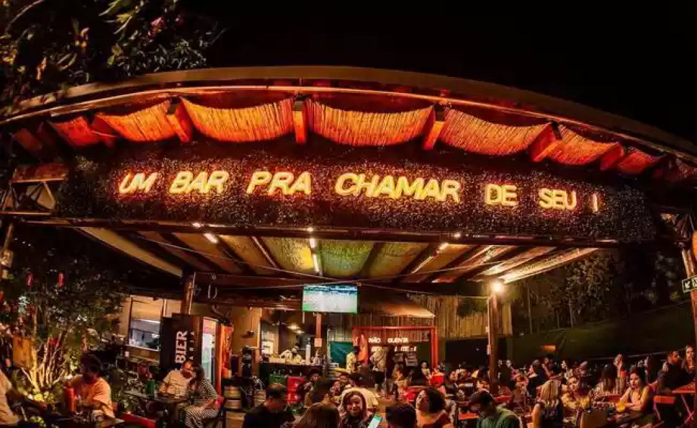
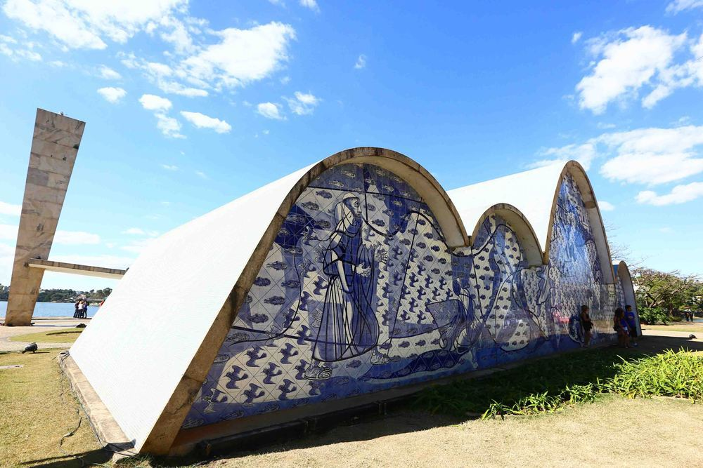

Onde se hospedar em Belo Horizonte?
Estar bem localizado faz toda a diferença durante a sua viagem, pois assim você poderá fazer alguns roteiros a pé, sem gastar tempo e dinheiro com deslocamento. Dessa forma, os bairros mais recomendados para se hospedar em BH são: Savassi e Centro.
Enquanto a Savassi tem a melhor estrutura hoteleira e uma das noites mais animadas de BH, com uma boa variedade de bares e restaurantes, o Centro tem um ambiente mais popular, hotéis mais baratos e atrações históricas e culturais. Se eu tivesse que escolher um dos dois, não pensaria duas vezes na Savassi, por questões de segurança.

Aqui vão minhas sugestões de hotéis para a sua estadia na Savassi:
Novotel BH Savassi – Nota 9,1 no Booking
Hotel Vivenzo Savassi Belo Horizonte – Nota 8,7 no Booking
eSuites Savassi Toscanini – Nota 8,7 no Booking
O que fazer em Belo Horizonte: bares e restaurantes
Se você veio até aqui para saber o que fazer em Belo Horizonte a noite, o seu momento chegou! Se bem que dá para curtir essas dicas para um Happy Hour, uma tarde de sábado ou um almoço de domingo!

Savassi
O conhecidíssimo bairro Savassi atrai muitas visitas, para quem curte um cineminha, para aqueles que gostam de ir às compras, para os amantes da culinária mineira e para os grupos de amigos que não trocam a resenha de bar por nada! São mais de 200 opções para escolher.
Bares imperdíveis em Belo Horizonte para incluir no roteiro:
Redentor
Wäls Gastropub
Dona Lucinha
Casa Cheia
Bares da rua Pium-i
Na zona-sul de BH você encontra uma rua badalada e recheada de bares para tomar uma cerveja ou uma cachacinha mineira.
Com música ao vivo, um happy hour de qualidade, cozinhas variadas, o bairro atrai muitos jovens e é ótimo para curtir com a família. Muitos bares abrem apenas aos finais de semana, o que facilita suas possibilidades de lazer se está buscando o que fazer em Belo Horizonte no final de semana:
O Vibe de Domingo tem uma vibe mais balada e proporciona uma experiência de música ao vivo.
O Albanos Hub Cervejeiro é especializado em produção de cerveja própria.
A Cia do Boi Pium-í é considerada um lugar bacana para a criançada e uma opção boa para quem gosta de degustar carnes.
O Almanaque: cerveja bem gelada, ambiente agradável e muita gente bonita.
O que fazer em Belo Horizonte: TOP 3
1- Mercado Central: o coração de MG em um só lugar
Se nós estamos falando de um lugar que vai dar água na boca, nós estamos falando do Mercado Central de Belo Horizonte. Com nove décadas de existência e mais de 400 lojas, o local une as feiras da Praça da Estação e da Praça da Atual Rodoviária.
Você vai encontrar temperos de várias regiões do estado, barracas de frutas, bebidas, flores, além de uma variedade gigantesca de queijos para degustar e comprar. Doces de leite e de frutas não podem faltar, mas se seu foco não for o paladar, não tem problema, existem diversas opções de artigos para casa, desde canequinhas com o estilo mineiro à panelas de barro e ferro.

Vale saber: o mercado tem horários de funcionamento de segunda a sábado, das 8h às 18h. Domingo e feriados 8h às 13h. O estacionamento funciona no segundo andar diariamente, das 7h às 21h. Além disso, possui acessibilidade por meio de elevadores, rampas de acesso e disponibilizando cadeiras de rodas.
2- Igreja da Pampulha - São Francisco de Assis
Se há uma imagem que marca a cidade de Belo Horizonte, certamente é a Igreja São Francisco de Assis, ou, simplesmente, Igrejinha da Pampulha. Com projeto e traços de Oscar Niemeyer, ela é um dos maiores ícones da capital mineira e um lindo cartão postal da cidade. Visita imperdível, a Igreja de São Francisco de Assis faz parte do Conjunto Arquitetônico da Pampulha tombado como Patrimônio Cultural da Humanidade. Inaugurada em 1943, a igreja foi considerada moderna demais para a época e não foi bem recebida pela população, tendo permanecida fechada até 1959, quando finalmente passou a funcionar como templo religioso.
A Igreja da Pampulha, além do traçado de Oscar Niemeyer, tem paisagismo de Burle Marx, painéis externos e internos de Candido Portinari e ainda uma obra em bronze no interior de autoria de Alfredo Ceschiatti, mesmo autor dos anjos da Catedral de Brasília. Para quem gosta de fotografar, a Igreja da Pampulha é um deleite! Os ângulos são surpreendentes e o visual noturno, à beira da Lagoa da Pampulha, é ainda mais deslumbrante.
A visitação é gratuita, porém funcionários da igreja pedem uma contribuição em dinheiro para quem for visitar o interior. Durante as missas, o valor não é cobrado

3- Praça da Liberdade com seus museus e centros culturais
Não muito distante dos mercados, está a Praça da Liberdade, o programa perfeito para quem busca o que fazer em Belo Horizonte com crianças. Conhecida como a sede de prédios importantes para Minas Gerais, ela abarca um conjunto rico de arquitetura, design, jardins e cultura, além de ser um dos lugares abertos em Belo Horizonte para passear.
 1.png)
O cartão postal da região é o Edifício Niemeyer. Desenhado pelo arquiteto brasileiro Oscar Niemeyer, ele traz o simbolismo das montanhas de Minas, por meio de suas curvas. Esse prédio é residencial, mas um lugar maravilhoso para levar os pequenos, que com certeza ficarão intrigados com o tamanho e altura, além de render várias fotos do lado de fora.
O segundo destino das redondezas é o Palácio da Liberdade, com suas fachadas, jardins, orquidários, arquitetura com inspiração francesa e objetos de grande valor histórico. É possível visitá-lo nos fins de semana, com grupos reduzidos de até 12 pessoas, às 10h, 11h, 13h, 14h e 15h. Os horários de visita devem ser previamente agendados no site do APPA – Arte e Cultura.
Em terceiro, temos o Centro Cultural Banco do Brasil – CCBB, as programações tem um objetivo pedagógico e diverso, seja com exposições, mostras de filmes, livrarias e cafeterias. Perfeito para curtir uma tarde aconchegante, aproveitando as atrações em Belo Horizonte. O CCBB funciona todos os dias, das 10h às 22h, exceto às terças.
E não paramos por aí! Além dos três destaques, na Praça da Liberdade você encontra o Memorial Minas Gerais, o Museu das Minas e do Metal, o Espaço do Conhecimento da UFMG, a Casa FIAT de Cultura, o Centro de Arte Popular e o Museu Mineiro.